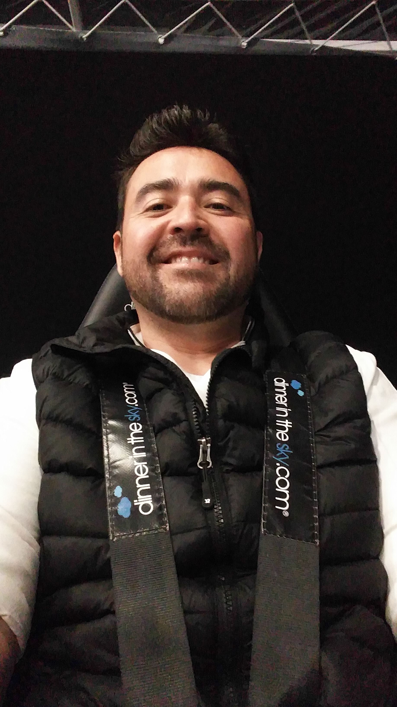

Hoja de vida
Oscar Alejandro Larios Garcia
Guatemala, 1 de Abril de 1973

PERFIL
Cocinero profesional, con miras a convertirse en un desarrollador de paginas web
dedicadas a la gastronomia, en donde los usuarios puedan aprender de manera facil
el arte de la cocina y sus secretos.
Habilidades
- Manejo de inventarios
- Rapido aprendizaje
- Responsable
- Ordenado
- Uso y manejo de todo el equipo de cocina
Idiomas hablados y escritos